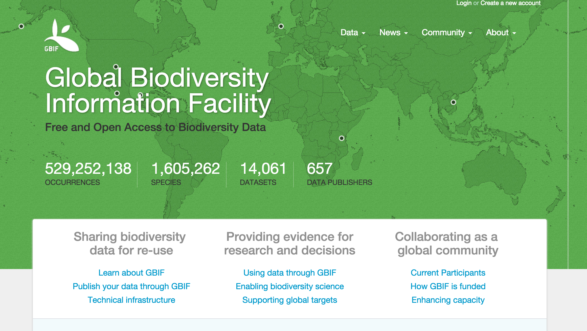

rgbif
Here's the rgbif screencast!
Follow along below in your favorite R client.
rgbif screencast
Intro
Hi, I'm Scott Chamberlain
In this screencast, I'll do a brief intoduction to the
rgbifpackage - a taxonomic toolbelt forRYou can install rgbif from CRAN, or install the development version from GitHub.
rgbif allows you to get species occurrence data from Global Biodiverity Information Facilty (GBIF)

Taxonomic names are something many biologists have to deal with
I'll walk you through a variety of things you can do with rgbif
Installation and load
install.packages("rgbif")
library("rgbif")
Get number of occurrences
Search by type of record, all observational in this case
occ_count(basisOfRecord = 'OBSERVATION')
#> [1] 114400685
Records for Puma concolor with lat/long data (georeferened) only. Note that
hasCoordinateinocc_search()is the same asgeoreferencedinocc_count().
occ_count(taxonKey = 2435099, georeferenced = TRUE)
#> [1] 2808
All georeferenced records in GBIF
occ_count(georeferenced = TRUE)
#> [1] 460915105
Records from Denmark
denmark_code <- isocodes[grep("Denmark", isocodes$name), "code"]
occ_count(country = denmark_code)
#> [1] 9610908
Search for taxonomic names
Four taxononomic names functions
name_backbone()name_lookup()name_usage()name_suggest()
name_backbone()searches against the GBIF backbone taxonomy
name_backbone(name = 'Helianthus', rank = 'genus', kingdom = 'plants')
#> $usageKey
#> [1] 3119134
#>
#> $scientificName
#> [1] "Helianthus L."
#>
#> $canonicalName
#> [1] "Helianthus"
#>
#> $rank
#> [1] "GENUS"
#>
#> $status
#> [1] "ACCEPTED"
#>
#> $confidence
#> [1] 97
#>
#> $matchType
#> [1] "EXACT"
#>
#> $kingdom
#> [1] "Plantae"
#>
#> $phylum
#> [1] "Magnoliophyta"
#>
#> $order
#> [1] "Asterales"
#>
#> $family
#> [1] "Asteraceae"
#>
#> $genus
#> [1] "Helianthus"
#>
#> $kingdomKey
#> [1] 6
#>
#> $phylumKey
#> [1] 49
#>
#> $classKey
#> [1] 220
#>
#> $orderKey
#> [1] 414
#>
#> $familyKey
#> [1] 3065
#>
#> $genusKey
#> [1] 3119134
#>
#> $synonym
#> [1] FALSE
#>
#> $class
#> [1] "Magnoliopsida"
name_lookup()does full text search of name usages covering the scientific and vernacular name, the species description, distribution and the entire classification across all name usages of all or some checklists
out <- name_lookup(query = 'mammalia')
names(out)
#> [1] "meta" "data" "facets" "hierarchies" "names"
out$meta
#> offset limit endOfRecords count
#> 1 0 100 FALSE 119432
head(out$data, n = 2)
#> key scientificName datasetKey
#> 1 125798198 Mammalia 16c3f9cb-4b19-4553-ac8e-ebb90003aa02
#> 2 116665331 Mammalia Linnaeus, 1758 cbb6498e-8927-405a-916b-576d00a6289b
#> nubKey parentKey parent phylum phylumKey classKey canonicalName
#> 1 359 137006861 Chordata Chordata 137006861 125798198 Mammalia
#> 2 359 143035196 Chordata Chordata 143035196 116665331 Mammalia
#> authorship nameType rank numDescendants numOccurrences taxonID
#> 1 WELLFORMED CLASS 2 0 2621711
#> 2 Linnaeus, 1758 WELLFORMED CLASS 1193 0 18838
#> extinct habitats nomenclaturalStatus threatStatuses synonym class
#> 1 TRUE <NA> NA NA FALSE Mammalia
#> 2 NA <NA> NA NA FALSE Mammalia
#> kingdom kingdomKey publishedIn accordingTo taxonomicStatus order
#> 1 <NA> NA <NA> <NA> <NA> <NA>
#> 2 Animalia 116630539 <NA> <NA> <NA> <NA>
#> orderKey species speciesKey acceptedKey accepted family familyKey genus
#> 1 NA <NA> NA NA <NA> <NA> NA <NA>
#> 2 NA <NA> NA NA <NA> <NA> NA <NA>
#> genusKey
#> 1 NA
#> 2 NA
Search for occurrences
By default
occ_search()returns adplyrlike output summary in which the data printed expands based on how much data is returned, and the size of your window. You can search by scientific name:
occ_search(scientificName = "Ursus americanus", limit = 20)
#> Records found [6877]
#> Records returned [20]
#> No. unique hierarchies [1]
#> No. media records [20]
#> Args [scientificName=Ursus americanus, limit=20, offset=0, fields=all]
#> First 10 rows of data
#>
#> name key decimalLatitude decimalLongitude
#> 1 Ursus americanus 891034709 29.23322 -103.29468
#> 2 Ursus americanus 891041363 29.28284 -103.28908
#> 3 Ursus americanus 1024328693 34.20990 -118.14681
#> 4 Ursus americanus 891045574 43.73511 -72.52534
#> 5 Ursus americanus 1050834838 33.11070 -107.70675
#> 6 Ursus americanus 891056344 29.27444 -103.31536
#> 7 Ursus americanus 1024328712 39.51185 -120.16434
#> 8 Ursus americanus 1042823202 44.34088 -72.46131
#> 9 Ursus americanus 1024182262 50.09019 -117.46038
#> 10 Ursus americanus 911496466 29.27817 -103.30167
#> .. ... ... ... ...
#> Variables not shown: issues (chr), datasetKey (chr), publishingOrgKey
#> (chr), publishingCountry (chr), protocol (chr), lastCrawled (chr),
#> lastParsed (chr), extensions (chr), basisOfRecord (chr), taxonKey
#> (int), kingdomKey (int), phylumKey (int), classKey (int), orderKey
#> (int), familyKey (int), genusKey (int), speciesKey (int),
#> scientificName (chr), kingdom (chr), phylum (chr), order (chr),
#> family (chr), genus (chr), species (chr), genericName (chr),
#> specificEpithet (chr), taxonRank (chr), dateIdentified (chr), year
#> (int), month (int), day (int), eventDate (chr), modified (chr),
#> lastInterpreted (chr), references (chr), identifiers (chr), facts
#> (chr), relations (chr), geodeticDatum (chr), class (chr), countryCode
#> (chr), country (chr), gbifID (chr), verbatimEventDate (chr),
#> institutionCode (chr), datasetName (chr), catalogNumber (chr),
#> http...unknown.org.occurrenceDetails (chr), recordedBy (chr), rights
#> (chr), rightsHolder (chr), eventTime (chr), occurrenceID (chr),
#> identifier (chr), taxonID (chr), collectionCode (chr),
#> identificationID (chr), occurrenceRemarks (chr), infraspecificEpithet
#> (chr), verbatimLocality (chr), lifeStage (chr), elevation (dbl),
#> elevationAccuracy (dbl), continent (chr), stateProvince (chr),
#> georeferencedDate (chr), institutionID (chr), higherGeography (chr),
#> type (chr), identifiedBy (chr), georeferenceSources (chr),
#> identificationVerificationStatus (chr), samplingProtocol (chr),
#> endDayOfYear (chr), otherCatalogNumbers (chr), preparations (chr),
#> georeferenceVerificationStatus (chr), nomenclaturalCode (chr),
#> individualID (chr), higherClassification (chr), locationAccordingTo
#> (chr), previousIdentifications (chr), verbatimCoordinateSystem (chr),
#> georeferenceProtocol (chr), identificationQualifier (chr),
#> accessRights (chr), dynamicProperties (chr), county (chr), locality
#> (chr), language (chr), georeferencedBy (chr)
Or to be more precise, you can search for names first, make sure you have the right name, then pass the GBIF key to the
occ_search()function:
key <- name_suggest(q = 'Helianthus annuus', rank = 'species')$key[1]
occ_search(taxonKey = key, limit = 20)
#> Records found [20346]
#> Records returned [20]
#> No. unique hierarchies [1]
#> No. media records [9]
#> Args [taxonKey=3119195, limit=20, offset=0, fields=all]
#> First 10 rows of data
#>
#> name key decimalLatitude decimalLongitude
#> 1 Helianthus annuus 922042404 -3.28140 37.52415
#> 2 Helianthus annuus 899948224 1.27890 103.79930
#> 3 Helianthus annuus 891052261 24.82589 -99.58411
#> 4 Helianthus annuus 1038317691 -43.52777 172.62544
#> 5 Helianthus annuus 922039507 50.31402 8.52341
#> 6 Helianthus annuus 922044332 21.27114 40.41424
#> 7 Helianthus annuus 899970378 32.54041 -117.08731
#> 8 Helianthus annuus 1038322459 -43.07327 172.68473
#> 9 Helianthus annuus 998785009 44.10879 4.66839
#> 10 Helianthus annuus 899969160 24.82901 -99.58257
#> .. ... ... ... ...
#> Variables not shown: issues (chr), datasetKey (chr), publishingOrgKey
#> (chr), publishingCountry (chr), protocol (chr), lastCrawled (chr),
#> lastParsed (chr), extensions (chr), basisOfRecord (chr), taxonKey
#> (int), kingdomKey (int), phylumKey (int), classKey (int), orderKey
#> (int), familyKey (int), genusKey (int), speciesKey (int),
#> scientificName (chr), kingdom (chr), phylum (chr), order (chr),
#> family (chr), genus (chr), species (chr), genericName (chr),
#> specificEpithet (chr), taxonRank (chr), year (int), month (int), day
#> (int), eventDate (chr), lastInterpreted (chr), identifiers (chr),
#> facts (chr), relations (chr), geodeticDatum (chr), class (chr),
#> countryCode (chr), country (chr), gbifID (chr), institutionCode
#> (chr), catalogNumber (chr), recordedBy (chr), locality (chr),
#> collectionCode (chr), dateIdentified (chr), modified (chr),
#> references (chr), verbatimEventDate (chr), verbatimLocality (chr),
#> http...unknown.org.occurrenceDetails (chr), rights (chr),
#> rightsHolder (chr), occurrenceID (chr), taxonID (chr),
#> occurrenceRemarks (chr), datasetName (chr), eventTime (chr),
#> identifier (chr), identificationID (chr), county (chr), identifiedBy
#> (chr), stateProvince (chr), recordNumber (chr), verbatimElevation
#> (chr), georeferenceSources (chr), coordinateAccuracy (dbl), elevation
#> (dbl), elevationAccuracy (dbl), depth (dbl), depthAccuracy (dbl),
#> habitat (chr), fieldNotes (chr), municipality (chr)
You can choose what fields to return. This isn't passed on to the API query to GBIF as they don't allow that, but we filter out the columns before we give the data back to you.
occ_search(scientificName = "Ursus americanus", fields = 'name', limit = 20)
#> Records found [6877]
#> Records returned [20]
#> No. unique hierarchies [1]
#> No. media records [20]
#> Args [scientificName=Ursus americanus, limit=20, offset=0, fields=name]
#> First 10 rows of data
#>
#> name
#> 1 Ursus americanus
#> 2 Ursus americanus
#> 3 Ursus americanus
#> 4 Ursus americanus
#> 5 Ursus americanus
#> 6 Ursus americanus
#> 7 Ursus americanus
#> 8 Ursus americanus
#> 9 Ursus americanus
#> 10 Ursus americanus
#> .. ...
Most parameters are vectorized, so you can pass in more than one value:
splist <- c('Cyanocitta stelleri', 'Junco hyemalis', 'Aix sponsa')
keys <- sapply(splist, function(x) name_suggest(x)$key[1], USE.NAMES = FALSE)
occ_search(taxonKey = keys, limit = 5)
#> Occ. found [2482598 (355168), 2492010 (1942030), 2498387 (592003)]
#> Occ. returned [2482598 (5), 2492010 (5), 2498387 (5)]
#> No. unique hierarchies [2482598 (1), 2492010 (1), 2498387 (1)]
#> No. media records [2482598 (5), 2492010 (5), 2498387 (3)]
#> Args [taxonKey=2482598,2492010,2498387, limit=5, offset=0, fields=all]
#> First 10 rows of data from 2482598
#>
#> name key decimalLatitude decimalLongitude
#> 1 Cyanocitta stelleri 1052604494 37.76975 -122.4715
#> 2 Cyanocitta stelleri 1060841957 NA NA
#> 3 Cyanocitta stelleri 891781350 37.73646 -122.4880
#> 4 Cyanocitta stelleri 891047537 37.86877 -122.2373
#> 5 Cyanocitta stelleri 891051134 35.18636 -111.6423
#> Variables not shown: issues (chr), datasetKey (chr), publishingOrgKey
#> (chr), publishingCountry (chr), protocol (chr), lastCrawled (chr),
#> lastParsed (chr), extensions (chr), basisOfRecord (chr), taxonKey
#> (int), kingdomKey (int), phylumKey (int), classKey (int), orderKey
#> (int), familyKey (int), genusKey (int), speciesKey (int),
#> scientificName (chr), kingdom (chr), phylum (chr), order (chr),
#> family (chr), genus (chr), species (chr), genericName (chr),
#> specificEpithet (chr), taxonRank (chr), dateIdentified (chr), year
#> (int), month (int), day (int), eventDate (chr), modified (chr),
#> lastInterpreted (chr), references (chr), identifiers (chr), facts
#> (chr), relations (chr), geodeticDatum (chr), class (chr), countryCode
#> (chr), country (chr), verbatimEventDate (chr), verbatimLocality
#> (chr), http...unknown.org.occurrenceDetails (chr), rights (chr),
#> rightsHolder (chr), occurrenceID (chr), collectionCode (chr), taxonID
#> (chr), occurrenceRemarks (chr), gbifID (chr), institutionCode (chr),
#> catalogNumber (chr), datasetName (chr), recordedBy (chr), eventTime
#> (chr), identifier (chr), identificationID (chr), sex (chr), lifeStage
#> (chr), establishmentMeans (chr), infraspecificEpithet (chr),
#> continent (chr), stateProvince (chr), startDayOfYear (chr),
#> preparations (chr), recordNumber (chr), nomenclaturalCode (chr),
#> institutionID (chr), higherClassification (chr), higherGeography
#> (chr), type (chr), accessRights (chr), endDayOfYear (chr), county
#> (chr), occurrenceStatus (chr), locality (chr), language (chr)
Single occurrence records
Get data for a single occurrence. Data is returned as a list, with slots for metadata and data
Just data
occ_get(key = 766766824, return = 'data')
#> name key decimalLatitude decimalLongitude issues
#> 1 Corvus monedula 766766824 59.4568 17.9054 depunl,gass84
Just taxonomic hierarchy
occ_get(key = 766766824, return = 'hier')
#> name key rank
#> 1 Animalia 1 kingdom
#> 2 Chordata 44 phylum
#> 3 Aves 212 class
#> 4 Passeriformes 729 order
#> 5 Corvidae 5235 family
#> 6 Corvus 2482468 genus
#> 7 Corvus monedula 2482473 species
All data, or leave return parameter blank
occ_get(key = 766766824, return = 'all')
#> $hierarchy
#> name key rank
#> 1 Animalia 1 kingdom
#> 2 Chordata 44 phylum
#> 3 Aves 212 class
#> 4 Passeriformes 729 order
#> 5 Corvidae 5235 family
#> 6 Corvus 2482468 genus
#> 7 Corvus monedula 2482473 species
#>
#> $media
#> list()
#>
#> $data
#> name key decimalLatitude decimalLongitude issues
#> 1 Corvus monedula 766766824 59.4568 17.9054 depunl,gass84
Get many occurrences.
occ_getis vectorized
occ_get(key = c(766766824, 101010, 240713150, 855998194, 49819470), return = 'data')
#> name key decimalLatitude decimalLongitude
#> 1 Corvus monedula 766766824 59.45680 17.90540
#> 2 Platydoras costatus 101010 -4.35000 -70.06670
#> 3 none 240713150 -77.56670 163.58299
#> 4 Sciurus vulgaris 855998194 58.40680 12.04380
#> 5 Phlogophora meticulosa 49819470 55.72462 13.28238
#> issues
#> 1 depunl,gass84
#> 2 cucdmis,gass84
#> 3 cdround,gass84,txmatnon
#> 4 depunl,gass84
#> 5 cdround,gass84
Other things to explore
- Maps! We have some basic mapping functionality to help you visualize data
- Registry data - there's a suite of functions to explore data providers to GBIF
spoccExplore the R packagespocc, where we integrate biodiversity data from many places, including from GBIF via this package
end
That's it! Thanks for watching...